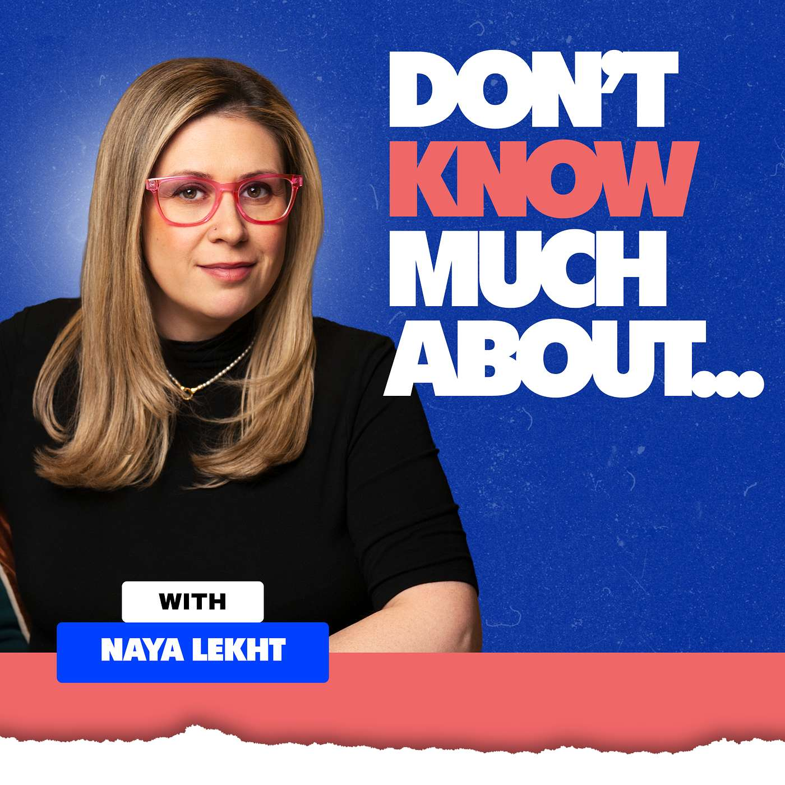

Interviews


Don’t Know Much About
The Church Fathers’ Trick, 2000 Year Later
Naya Lekht asks Kile about the intellectual path that changed his view of Israel.
Don’t Know Much About
Naya Lekht asks Kile about the intellectual path that changed his view of Israel.